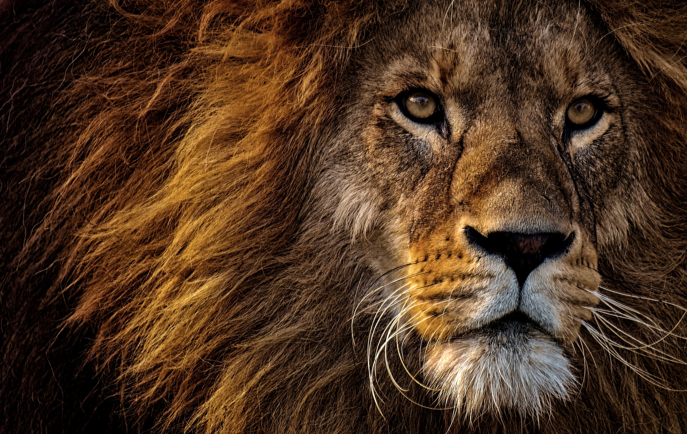

Lion
Nearly all wild lions live in Africa, below the Sahara Desert, but one small population exists around Gir Forest National Park in western India.
- Scientific Name: Panthera leo
- Average Length: 1.8meters
- Average Lifespan: 10 years
- Habitat: Grassland
The length and color of a lion's mane is likely determined by age, genetics and hormones. Young lions have light spotting on their coats that disappears as they grow. Without their coats, lion and tiger bodies are so similar that only experts can tell them apart.